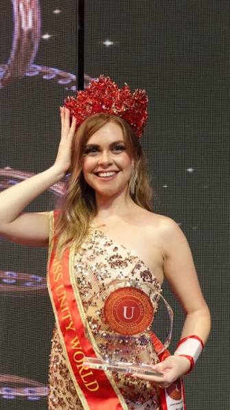

Images van onze Internationale queens
-

-

-

-

-

-

-

-

-

Hoewel eigenlijk alle verkiezingen hetzelfde functioneren, waarbij je
begint met een auditie en daarna een traject van 4-6 maanden ingaat, doen
alle verkiezingen het net even anders. In deze maanden ga je verschillende
dingen doen, zoals fotoshoots, een stemcampagne doen en verschillende
goede-doelenacties. Ook krijg je cursussen in catwalk, social media en
manieren.
Achter de schermen kunnen verkiezingen echter heel verschillend werken. Zo
worden verkiezingen zoals Miss Nederland en Miss Beauty door een groot
team gerund, waarbij veel mensen samenwerken. Soms worden deze mensen hier
ook voor betaald. Dit zijn verkiezingen die vaak al bekend zijn en die ook
grote internationale podia belopen. Maar je hebt ook kleinere
verkiezingen. Die doen mij altijd meer denken aan mensen die zzp-werk
doen.
Een goed voorbeeld hiervan is de verkiezing Miss Aura, die gerund
wordt door één vrouw. Hierbij helpen finalisten en oud-winnaressen ook
vaak mee. Dit zijn vaak echte passieprojecten. Dit zie je ook vaak bij wat
kleinere internationale podia. Je kan een titel ‘kopen’.
Dit houdt in dat je een licentie koopt. Dit betekent dat jij de
kroon aan iemand mag geven en dat jij verantwoordelijk bent om iemand naar
het internationale podium te sturen. Zo komen bedrijven aan hun
verkiezingen en zo komen verkiezingen te ontstaan. Dit betekent niet dat
je zomaar een titel kan kopen en er vervolgens heen kan gaan. Hoewel dit
natuurlijk wel gebeurt, is dit zeker niet de bedoeling. Je wordt al snel
door de publieke mening uit de verkiezing gezet. Sommige verkiezingen
hebben hier ook diskwalificatieregels voor.
